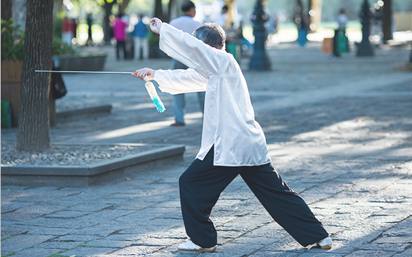

拳馆介绍
陈志江，太极拳发源地河南温县陈家沟人，陈家沟陈氏第二十世，陈氏太极拳第十二代嫡宗传人，师承其父陈喜太及伯父陈照森大师。
现为陈家沟太极拳推广中心理事、陈照森太极拳研究会（第一届）副会长、陈家沟
太极拳功夫学校主教练，一级拳师、国际太极拳高.级教练。出生于太极拳世家，6岁即随父陈喜太、伯父陈照森习武至今。熟练掌握陈氏太极拳精练26式、陈氏太极拳老架一路及二路、太极单剑、太极单刀、春秋大刀、太极推手养生功等技艺，尤擅陈氏太极推手、老架二路、太极单刀、春秋大刀等。
陈氏公众号
培训课程TRAININGCOURSE


陈氏太极
去伪存真，去曲取直，删繁归约，直奔主题
新闻动态NEWSINFORMATION
-
太极与养生
太极拳虽属于中华武术的范畴，也可说成是中国医学的组成部分之一。通过练习太极拳可以达到祛病、健身、养生、延年的目的。在我国较早的一部医书《黄帝内经》中就记载有：“上古之人，其知道者...
-
太极与养生
太极拳虽属于中华武术的范畴，也可说成是中国医学的组成部分之一。通过练习太极拳可以达到祛病、健身、养生、延年的目的。在我国较早的一部医书《黄帝内经》中就记载有：“上古之人，其知道者...

-
太极与养生
太极拳虽属于中华武术的范畴，也可说成是中国医学的组成部分之一。通过练习太极拳可以达到祛病、健身、养生、延年的目的。在我国较早的一部医书《黄帝内经》中就记载有：“上古之人，其知道者...
-
太极与养生
太极拳虽属于中华武术的范畴，也可说成是中国医学的组成部分之一。通过练习太极拳可以达到祛病、健身、养生、延年的目的。在我国较早的一部医书《黄帝内经》中就记载有：“上古之人，其知道者...